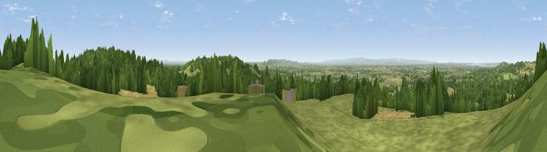

Viewpoint near Kelsall
#4714 in England · top 11% of its area beats it · near KelsallThe view, rendered

A 360° render of this exact spot computed from the terrain model, tree cover and land cover — summer colours, afternoon light, calibrated against photographs of famous viewpoints. Real trees, hedges and buildings will differ in detail.
The panorama
Grey silhouette: terrain skyline in each direction (720 bearings, Earth curvature and refraction included). Dashed green: skyline with trees (+15 m) and buildings (+8 m) as obstacles. Blue strip: how far the ground is visible on each bearing.
Where the view opens
Wedge length = distance to the farthest visible ground on that bearing (vegetation-aware). Rings at 10, 25 and 50 km.
What fills the view
51% grassland · 30% woodland · 14% cropland · 4% built-up
Angular shares of the visible panorama (visual magnitude), not map area. Landscape diversity 0.49 (0–1 Shannon).
Key numbers
More beautiful places nearby
The staircase of upgrades: each row has a higher view potential than everything closer. Driving times are estimates from straight-line distance, calibrated against real road routing — check an actual route before setting out.
| Place | Direction | Drive | Score |
|---|---|---|---|
| Viewpoint near Kelsall | NNE · 1 km | ~2 min | 71.3 |
| Hangingstone Hill - Pale Heights | ENE · 2 km | ~5 min | 73.3 |
| Helsby Hill | NNW · 7 km | ~15 min | 74.6 |
| Beacon Hill | N · 8 km | ~16 min | 77.3 |
| Viewpoint near Harthill | S · 14 km | ~25 min | 80.5 |
| White Brow | NNE · 45 km | ~66 min | 82.9 |
| Viewpoint near Halfway House | SSW · 60 km | ~82 min | 83.3 |
| Viewpoint near Little Wenlock | S · 61 km | ~84 min | 84.2 |
53.21628, -2.70942 · source: screening · position refined by local search. Computed location — check access rights before visiting.